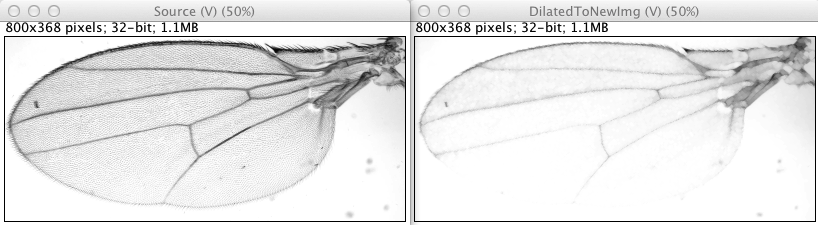
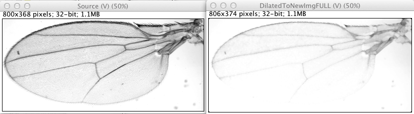
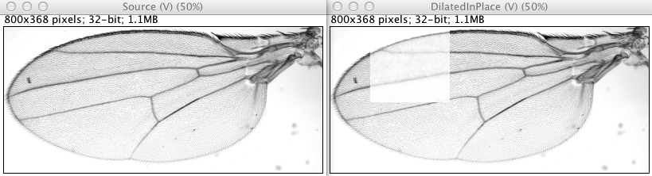
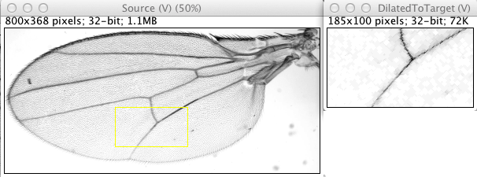

ImgLib2 Morphological Operations
This page describes the {% include wikipedia title=‘Mathematical morphology’ text=‘mathematical morphology’ %} operations available as part of the ImgLib2 library.
Implementation
Package content and location
This ImgLib2 package ships only (yet) the basic morphological operations:
- erosion
- dilation
- opening
- closing
These 4 operations are implemented for arbitrary dimensionalities (2D, 3D, 4D, etc…). The package reuses standard ImgLib2 interfaces and classes. It also conforms to the public static methods accessors for low level algorithms, as the gauss3 package does. Apart from this, it is strongly inspired by the morphological operation methods in the Image Processing Toolbox of the MATLAB software.
It also ships facilities to generate structuring elements, and allows the use of decomposed structuring elements for performance optimization. This part is documented below.
Classes can be found in the net.imglib2.algorithm.morphology package of the imglib2-algorithm library.
Examples can be found in the net.imglib2.algorithm.morphology package of the imglib2-tests library.
Gray morphology and flat structuring elements
This set of methods does gray morphology. It applies to source images that can be of any scalar numerical type (8-bit, 12-bit, 16-bit, booleans, floats, signed or unsigned, …), not only black and white images.
It actually applies to more than this: The type of the source image only needs to extend Type (the ImgLib2 mother interface for values) and Comparable (the java interface for objects than can be compared to others). This is detailed later.
However, we use the ImgLib2 Shape interface for structuring elements. This restricts structuring elements to flat structuring elements, which do not have a weight, or value, associated to each location. This prevents us from developing a stricto sensu rolling-ball background subtraction algorithm based on this package (but a rolling-disk version is possible).
Morphological operations on Comparable type
Morphological operations are defined on types that have very little requirement. The data does not have to be made of numerical pixels at all. Mathematically, they are defined on partially ordered sets (complete lattices, see for instance {% include wikipedia title=‘Dilation (morphology)#Dilation_on_complete_lattices’ text=‘“Dilation on complete lattices”’%}).
In ImgLib2, we require a little bit more than that. The data type you can use with morphological operations needs to be comparable. In practice, it must extends Type and Comparable: T extends Type< T > & Comparable< T >. With this, it is perfectly possible to dilate an image of strings by a 3x3 square strel:
Before:
Upcycle Sexting Unfriend Droolworthy Noob Muggle
Woot Po-po Purple State Guyliner Screenager Crunk
Obvs Mankini Locavore Bling Textspeak Muffin Top
Infomania Grrrl Truthiness Bromance D'oh Twitterati
La-la Land Whatevs Illiterati OMG Hater Jeggings
Jean-Yves Mini-Me Chillax Frankenfood Totes Whovian
After full dilation:
Upcycle Upcycle Upcycle Unfriend Unfriend Noob Noob Muggle
Woot Woot Woot Unfriend Unfriend Screenager Screenager Muggle
Woot Woot Woot Unfriend Unfriend Textspeak Textspeak Muggle
Woot Woot Woot Truthiness Truthiness Twitterati Twitterati Twitterati
Obvs Whatevs Whatevs Whatevs Truthiness Twitterati Twitterati Twitterati
La-la Land Whatevs Whatevs Whatevs Truthiness Whovian Whovian Whovian
La-la Land Whatevs Whatevs Whatevs Totes Whovian Whovian Whovian
Jean-Yves Mini-Me Mini-Me Mini-Me Totes Whovian Whovian Whovian
After standard dilation:1
Woot Woot Unfriend Unfriend Screenager Screenager
Woot Woot Unfriend Unfriend Textspeak Textspeak
Woot Woot Truthiness Truthiness Twitterati Twitterati
Whatevs Whatevs Whatevs Truthiness Twitterati Twitterati
Whatevs Whatevs Whatevs Truthiness Whovian Whovian
Whatevs Whatevs Whatevs Totes Whovian Whovian
Usage
The 4 basic operations are accessed through 4 classes:
- net.imglib2.algorithm.morphology.Dilation
- net.imglib2.algorithm.morphology.Erosion
- net.imglib2.algorithm.morphology.Opening
- net.imglib2.algorithm.morphology.Closing
Each of these classes contains only static methods that performs the desired operation. There can be up to 16 flavors of the same operation. They exist to cover all cases, which fall in 4 categories:
You want to operate on an Img and return a new Img with the results. Then you need to call for instance:
Img< FloatType > result = Dilation.dilate( img, strel, 1 );
You want to perform to full dilation or erosion on a source Img. Full version of these operations means the new image will have a size increased or shrunk as if the structuring element would actually dilate or erode the source border:
Img< FloatType > result = Dilation.dilateFull( img, strel, 1 );
You want to operate on a source RandomAccessibleInterval, in place (write the results in the source):
Dilation.dilateInPlace( rai, interval, strel, 1 );
You want to operate on a source RandomAccessible, and write the results in a provided IterableInterval:
Dilation.dilate( source, target, strel, 1 )
Now, each of these category are declined in 4 specifics methods:
Depending on the source type:
- If the source type inherits from RealType - which is the case for most numeric types and all the native types - then you can use directly the above methods without any extras.
- But you may have a source which might be
T extends Comparable & Type. Then you have to provided the maximal value or the minimal value or both for this type. Then you have to call the methods whose signature are like:public static < T extends Type< T > & Comparable< T > > Img< T > dilate( final Img< T > source, final Shape strel, final T minVal, final int numThreads )
Depending on whether you have the structuring element as a single Shape or decomposed in a list of Shape, there is a version of all those methods for this case or the other.
public static < T extends RealType< T > > Img< T > dilate( final Img< T > source, final Shape strel, final int numThreads ) ``` andpublic static < T extends RealType< T > > Img< T > dilate( final Img< T > source, final List< Shape > strels, final int numThreads ) ```
Structuring elements and their decomposition
Morphological operations are basically neighborhood operations: you iterate in a neighborhood around each location of the source, and the target value at this location depends on the maximal or minimal value you meet then. So typically, the complexity of the algorithm can be written as N × n where N is the number of pixels in the source and n is the number of pixels in the neighborhood. For instance, for a square neighborhood of side l it will be N × l².
It turns out some structuring elements can be decomposed to achieve greater performance. For instance, looking for the maximum in a square of side l can be achieved by first looking for the maximum in an horizontal line of length l, writing the results somewhere, then looking for the maximum of the intermediate image in a vertical line of length l. The square structuring element can be decomposed in two orthogonal lines. The benefits in complexity are immediate; with the decomposition, it is now of N × 2 × l. Benefits are greater as the size of the neighborhood increases.
Several structuring elements can be decomposed, sometimes depending on the dimensionality of the problem.
In the ImgLib2 morphology package, these decompositions are achieved through the StructuringElements class. For instance:
public static final List< Shape > diamond( final int radius, final int dimensionality, final boolean decompose )This method returns a structuring element as a list of shapes, and a boolean flag determines if the returned list correspond to an optimization or not. As seen above, all operations are built to support a list of shapes as structuring element.
The following paragraphs document what decompositions are currently implemented for common structuring elements.
Rectangular structuring element
Decomposition
A rectangle can be decomposed in a series of orthogonal lines, in any dimensions, considerably diminishing the number of pixels to iterate.
2D case
If the image has M pixels, and that the rectangle is a square of side R, then the non-optimized case should have a processing time proportional to M × R². The optimized case replace iterating over the square by iterating twice over a line of length R. Therefore its processing time should be proportional to 2 × M × R.
The performance improvement should therefore be equal to R / 2. A linear fit of the actual curve rather shows that the law is 0.73 × R + 0.37. This extra benefit - I don’t why it’s there.
{% include img src=‘rectanglestrel2dperformance’ caption=‘Processing time for the dilation of a 100x100 image.’ width=370 %} {% include img src=‘rectanglestrel2dperformancecomparison’ caption=‘Processing time ratio.’ width=362 %}
3D case
Here the standard case takes a time proportional to M × R³, and the optimized case a time proportional to 3 × M × R. Therefore the performance ratio should be R² / 3. A fit shows that this ratio follows 0.63 × R² + 0.57 × R + 0.48.
{% include img src=‘rectanglestrel3dperformance’ caption=‘Processing time for the dilation of a 40x40x40 image.’ width=362 %} {% include img src=‘rectanglestrel3dperformancecomparison’ caption=‘Processing time ratio.’ width=366 %}
Square structuring element
Decomposition
The square is just a special case of the rectangle, implemented for convenience. It has the same decomposition principle. And similar conclusions can be reached:
2D case
{% include img src=‘squarestrel2dperformance’ caption=‘Processing time for the dilation of a 100x100 image.’ width=370 %} {% include img src=‘squarestrel2dperformancecomparison’ caption=‘Performance time ratio.’ width=366 %} {% include img src=‘squarestrel2dperformancewmatlab’ caption=‘First image zoomed to highlight MATLAB performance.’ width=366 %}
3D case
{% include img src=‘squarestrel3dperformance’ caption=‘Processing time for the dilation of a 49x49x49 image.’ width=362 %} {% include img src=‘squarestrel3dperformancecomparison’ caption=‘Processing time ratio.’ width=367 %} {% include img src=‘squarestrel3dperformancewmatlab’ caption=‘First image zoomed to highlight MATLAB performance.’ width=364 %}
Diamond structuring element
Shape
A diamond strel has the following shape in 2D, for instance with a radius of 3 (It extends over 7 pixels wide):
┌───────┐
│ █ │
│ ███ │
│ █████ │
│███████│
│ █████ │
│ ███ │
│ █ │
└───────┘And in 3D:
Z = 0: Z = 1: Z = 2: Z = 3: Z = 4: Z = 5: Z = 6:
┌───────┐ ┌───────┐ ┌───────┐ ┌───────┐ ┌───────┐ ┌───────┐ ┌───────┐
│ │ │ │ │ │ │ █ │ │ │ │ │ │ │
│ │ │ │ │ █ │ │ ███ │ │ █ │ │ │ │ │
│ │ │ █ │ │ ███ │ │ █████ │ │ ███ │ │ █ │ │ │
│ █ │ │ ███ │ │ █████ │ │███████│ │ █████ │ │ ███ │ │ █ │
│ │ │ █ │ │ ███ │ │ █████ │ │ ███ │ │ █ │ │ │
│ │ │ │ │ █ │ │ ███ │ │ █ │ │ │ │ │
│ │ │ │ │ │ │ █ │ │ │ │ │ │ │
└───────┘ └───────┘ └───────┘ └───────┘ └───────┘ └───────┘ └───────┘ It is the crudest approximation of a sphere.
Decomposition
The diamond strel can be effectively decomposed in 2D (and 1D) using the logarithmic decomposition in extreme sets, as explained in [^2]. The shape is then decomposed in a minimal series of smaller diamond and diamond tips. The decomposition is exact, giving the same result that of the non-decomposed version.
In 3D and higher dimensionalities, the logarithmic decomposition cannot be done, and we rely on a more classical linear decomposition (also well explained in [^2]). Here is a comparison on how the decomposed version performs versus the non-decomposed one.
2D performance
{% include img src=‘diamondstrel2dperformance’ caption=‘Processing time for the dilation of a 100x100 image.’ width=366 %} {% include img src=‘diamondstrel2dperformancecomparison’ caption=‘Processing time ratio.’ width=362 %}
It is worth using a decomposition above a radius of 4.
3D performance
{% include img src=‘diamondstrel3dperformance’ caption=‘Processing time for the dilation of a 40x40x40 image.’ width=364 %} {% include img src=‘diamondstrel3dperformancecomparison’ caption=‘Processing time ratio.’ width=364 %}
It is worth using a decomposition in almost any cases.
Comparison with MATLAB
MATLAB comes with a very nice morphology package. I actually took inspiration from to it to write the ImgLib2 code. It is tempting to compare the performance of MATLAB vs ImgLib2, even if this kind of comparison is always tricky and clumsy. Anyway, here it is. I just timed the duration required to perform the dilation of a provided source image, including the time required to generate the structuring element. ImgLib2 tests above time the same process. But of course, the time required to generate the source image and to start MATLAB or to launch the Java tests are not included. I took care to include a ‘warm-up’ run to allow the JIT compiler to kick-in in all cases.
{% include img src=‘diamondstrel2dperformancewmatlab’ caption=‘Processing time for the dilation of a 100x100 image.’ width=366 %} {% include img src=‘diamondstrel3dperformancewmatlab’ caption=‘Processing time for the dilation of a 40x40x40 image.’ width=364 %}
For the 2D case (only), MATLAB offers to generate optimized structuring elements, like for this ImgLib2 code. This is why there is two MATLAB curves on the 2D graph. We can see that in all cases, the MATLAB code is faster than the ImgLib2 code (respective to optimized vs optimized and the converse). This may be explained by the fact that MATLAB benefits on my computer (a 2012 MacPro) from the Intel Integrated Performance Primitives (IPP), that strongly improves block processing algorithms. Fortunately, the difference is not too taxing in the optimized case.
In 3D, MATLAB does not offer a structuring element decomposition (yet). So the performance curve as the expected cubic shape, though it outperforms ImgLib2 in the non-optimized case. For large radius, the ImgLib2 optimization manages to beat it.
Disk structuring element
2D Decomposition in periodic lines
In the 2D case, a disk structuring element can be decomposed in a succession of 4, 6 or 8 periodic lines[^3]. Doing so, the shape of the disk is only an approximate one. The first plot below indicates the percentage of pixels that are a mismatch compared to the “true” disk (by “true” I mean as best as digitizing a disk on a square matrix can be). In practice, this plot is rather uninformative. The second plot gives the effective aspect of the decomposed disks:
{% include img src=‘diskdecomperror’ caption=‘Error percentage when approximating a disk STREL with a PL decomposition.’ width=355 %} {% include img src=‘diskdecomperrorlook’ caption=‘Aspect of the disk STREL decomposition in periodic lines, with varying radius.’ width=360 %}
As for performance, you can see below that it is always best to use any decomposition as soon as the radius is larger than 3. This is a lucky limit, because the periodic line decomposition gives very approximated shapes for small radii.
{% include img src=‘diskdecompperformance’ caption=‘Processing time for the dilation of a 100x100 image.’ width=369 %} {% include img src=‘diskdecompperformancecomparison’ caption=‘Processing time ratio.’ width=371 %}
Decomposition for other dimensionalities
I am unable to derive an efficient decomposition of the disk STREL for the 3D case. Also, I was unable so far to find an implementation example or clear literature about such a decomposition. The closest I reach was this publication that describes a possible method (proposed in this DSP thread) but it missed the implementation details that could make it practical.
References and links
{% include citation fn=2 doi=“10.1016/1049-9652(92)90055-3” %}
{% include citation fn=3 doi=“10.1006/cgip.1993.1024” %}
Footnotes
These are the 35 words added by the Oxford Online Dictionary during summer 2012. And another one.↩︎